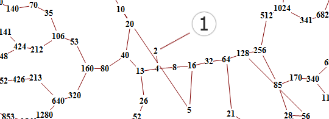

The Collatz Conjecture (or Hailstone Sequence)
Start with any number, n. If it is even, set it to n/2. If it is odd, set it to 3n + 1. Repeat this process forever. The conjecture states that no matter which n you start with, it will eventually reach 1. This conjecture has been described as extremely difficult to prove and beyond the reach of current mathematics.
Collatz(n) = { n/2 for n%2 = 1; 3n + 1 for n%2 = 1;
All numbers (so far) lead to one.
3n + 1 Calculator
Below is the number of times this function has to be repeated in order to get 1.
Iterations : --